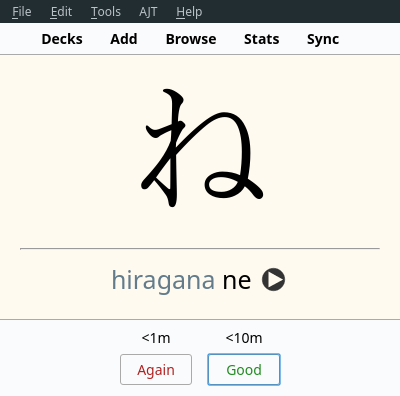
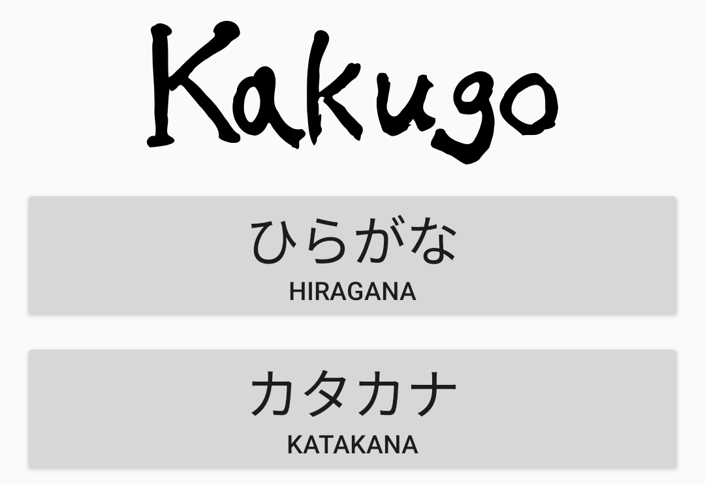
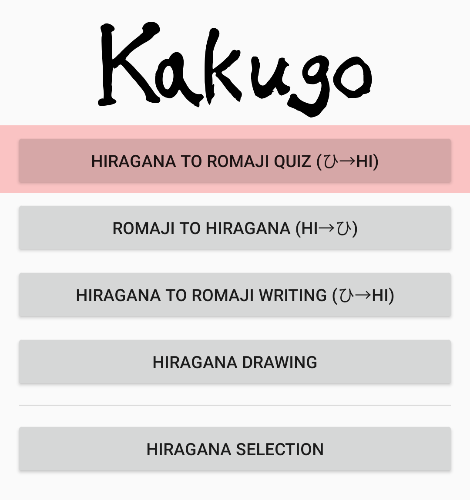

Learning kana in two days
Learning kana is usually taken as one of the first steps to learn Japanese. As you know, Japanese has three different writing systems: hiragana, katakana, and kanji. Hiragana and katakana are two phonetic writing systems, together they are referred to as "kana". Unlike kanji, kana characters don't represent unique meanings. All you need to do is to learn how they sound.
Kana how to
Hiragana and katakana are the two alphabets that you need to memorize. Each alphabet is a set of characters. Each character is associated with a sound or a sequence of sounds. Your job is to learn all the character-pronunciation pairs.
Hiragana and katakana happen to represent the same sounds. The symbols look different, but otherwise the two systems are completely identical. For example, あ and ア both share the same pronunciation. Then, why does Japanese need two identical writing systems? They are used differently. Katakana is used for words borrowed from other languages, to emphasize certain parts of text and to represent sounds. Hiragana is used for everything else.
Symbols of hiragana:
がぎぐげご ざじずぜぞ だぢづでど ばびぶべぼ ぱぴぷぺぽ
あいうえお かきくけこ さしすせそ たちつてと なにぬねの
はひふへほ まみむめも らりるれろ やゆよ わをん
ぁぃぅぇぉゃゅょっ
Symbols of katakana:
ガギグゲゴ ザジズゼゾ ダヂヅデド バビブベボ パピプペポ
アイウエオ カキクケコ サシスセソ タチツテト ナニヌネノ
ハヒフヘホ マミムメモ ラリルレロ ヤユヨ ワヲン
ァィゥェォャュョッ
There are three things that may confuse you.
- The small
tsucharacter. It is written as ッ (katakana) or as っ (hiragana). Unlike the other characters, it doesn't have a sound. Instead, it marks a geminate consonant. - There are versions of kana with a ﾞ mark such as が or だ, or kana with a ﾟ mark such as ぱ or ぷ.
- Kana combinations (glides). A kana character may combine with one of the small ゃ, ゅ or ょ (or their katakana variants) to produce new sounds, such as きゃ, きゅ or きょ. The sounds of the two kana blend together. All glides require the second letter to be written smaller than usual.
In addition to the characters listed above,
there are 4 additional kana that you only see in old (pre-1946) books,
hiragana ゐ, and ゑ, katakana ヰ and ヱ.
I included them in my Anki deck (see below) but other resources may not teach them.
Regardless, you'll get used to them with some practice.
Each kana combination or kana character with a mark should be treated as a symbol on its own and memorized as a whole. In total, you have to learn 230 symbols.
Below I present you different ways you can go about learning kana. Choose only one.
Anki deck
To follow this method for learning kana, you will need a custom Anki deck we have created for you. Don't forget to install Anki if you haven't done so. Download the deck at the link below.
Now that the deck is downloaded, install it by opening Anki and pressing "Import File".

An example card from the deck.
When a card comes up, try to recall the pronunciation of the displayed kana character. Press "Good" if your guess is correct. Otherwise, press "Again". You should be able to learn all the kana within two days. Feel free to increase your daily new cards limit to do so.
Continue reviewing this deck in the following weeks. Delete it once you move to studying sentences. When you read sentences, you also read hiragana and katakana, so you won't need to review them separately in Anki.
I specifically don't provide nor recommend using any mnemonics for memorizing kana. Kana is very easy, Japanese children learn it early on when they're little. As long as you put in the effort, you're not going to have any trouble with the alphabets.
Mobile apps
Kakugo
To learn to recognize kana I recommend the Android app called Kakugo. This is the app I myself used back in the day to learn the alphabets. With it, you can memorize the characters very quickly. If you practice a lot, you can do it within a couple of days.
Killer features:
- Free software that respects your freedom.
- Available in F-droid.
- Very simple and straightforward.
I don't recommend learning vocabulary or kanji using this app. Anki is way better for this purpose and will serve you well throughout your AJATT journey.

Main menu.
The only two options you need are hiragana and katakana.

Hiragana menu.
Once you select either hiragana or katakana, use the first option to drill the syllabaries.
Don't forget to check the app's settings.
You may want to toggle single button mode or hide answers.
The Kana Quiz
Another app that caught my attention recently is The Kana Quiz. It is similar to Kakugo, just with a slightly different UI.
Production
These days we rarely write by hand, and assuming you're doing AJATT, the first 1.5-2 years of your learning you're going to focus on input rather than output. However, writing practice is a good exercise because it forces you to actively recall the characters and helps you build muscle memory. Although I recommend learning to write once you're more advanced, because kana is generally very easy, you may try learning it through output the first time.
Refer to my Writing Japanese article to get started. You're going to learn kana with a premade Anki deck. Don't forget to download Anki if you haven't done so.
You are expected to complete the whole deck within a day or two. In the following weeks practice writing the letters daily. You can stop reviewing once you move to studying sentences since when you read sentences you also read hiragana and katakana.
Intermission
As you've probably started to notice already, the Japanese writing system as a whole is completely ridiculous. There's no serious reason to have both katakana and hiragana in use. Spaces aren't used to separate words. The system of kanji readings is to say the least inconsistent. Sometimes one kanji can have dozens of readings. You can go on and on.
I advocate that Japanese must switch to Cyrillic script. Cyrillic has worked remarkably well for many Asian and European languages.